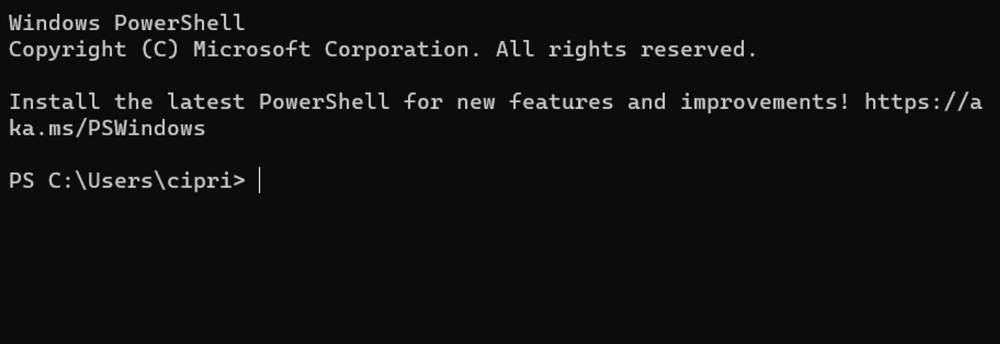
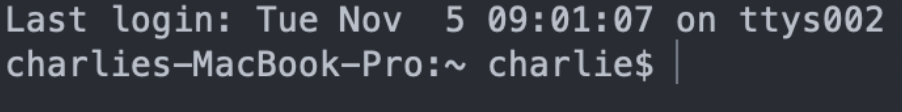

Navigating this Barren Wasteland of Text¶


A Windows and a MacOS terminalYour terminal might look a little different, depending where you are. It goes by many names: Terminal, Console, PowerShell, Command Line, etc. But no matter where you are, they're all the same if you type bash and hit enter.
What did that just do?¶
Terminals are finicky beasts. They take in commands, a line at a time. No syntax highlighting, no git integration, none of the comfort of VSCode. bash happens to be a command which sets the terminal "language" to... bash. How surprising.
The reason to do this is because not all terminals speak the same language - and the person who wrote this page happens to like using bash.
Looking around¶
If you're new to your terminal, then you're blind right now. You've got no clue what happened, or where you are. But remember what you (should have) read earlier? Your terminal is, in one way or another, a file browser. But you can't see or move unless you know your commands.
Note
Move your cursor bar with the left and right arrow keys. The up and down arrow keys are for scrolling through your previous commands to easily re-use them.
1) ls¶
ls is a short version of what it does: List the things I can see. In your file browser you can, for example, see all of your things inside your Downloads folder when you double-click on it to get there. ls is the command that tells you what's there. But how do we "get there" in the terminal? How do we know where we are?
2) pwd¶
pwd is the command that tells you where you are. As an example, let's say I type pwd and hit enter, and I get this as a response:
/users/Jim
This tells me I'm in the jim/ folder, which is in the users folder, and so on it might go until you hit the last /, which is the "root" folder of your entire computer. And that's cool and all, but I'd like to be in my downloads folder. I need to see what's in front of me.
Jim@Driverstation2 Jim %
Time to use ls!
Jim@Driverstation2 Jim % ls
And now we hit the enter key...
Jim@Driverstation2 Jim % ls
Applications Downloads Movies Public bin opt
Desktop Library Music Sites eclipse utmp.txt
Documents LocalApps Pictures Templates nltk_data
Note
When using ls, things that are not folders will have their extensions at the end of them, such as the .txt of utmp.txt in this scenario.
Abracadabra, we can see Downloads from here!
There's quite a lot of other things as well, but they don't matter... for now. For now, we need to "move" into that folder, which uses, you guessed it: another command!
3) cd¶
Unfortunately, cd does not stand for go to, unless you're pronouncing it as coe - due and pretending you said "go to". But you get the point, hopefully. cd is for "going" to locations. You type cd, put a space, and then the name of where you want to go.
Jim@Driverstation2 Jim % cd Down
Here's something that will save your time: You can type most of a file/folder name, and then hit tab to autocomplete the name! It will add the / symbol to the end of folders, so don't worry about that.
Jim@Driverstation2 Jim % cd Downloads/
Jim@Driverstation2 Downloads %
And look at that! The prompt text has changed, telling us we're in the Downloads folder instead of the Jim folder!
And if we run pwd to check where we are...
Jim@Driverstation2 Downloads % pwd
/Users/Jim/Downloads
Question
But what if I want to go backwards?
You're in luck. The cd command has special keywords for doing things like that.
.."backwards", or rather the folder holding your current folder. However, you can't do this when you're in the/(AKA the "root") folder, since nothing contains that.~Your "user" folder - this is the/Users/Jimwe were at, since our imaginary computer person was named "Jim"/The root directory of your computer. All the way back!
So cd .. will send you backwards, in our case from /Users/Jim/Downloads back into /Users/Jim
One Final Thing¶
Surely, you noticed that we use the / symbol to separate folders in file paths, right?
And you know that we have special keyword folders in cd?
These are useful together... sometimes. And you need to know where you're going, of course.
EX 1: Swapping folders¶
Let's say I want to go to a different github project than my current one.
Where am I? ~/Github/RobotCode2021
Where do I want to be? ~/Github/RobotCode2076
Instead of doing two separate commands to go back and then back into the other project, I can simply type cd ../Robotcode2076
EX 2: Going backward faster¶
Maybe you're within a folder within a folder within a folder, and so forth. Typing cd ../../../.. isn't very fun.
Where am I? Users/Jim/Documents/Github/RobotCode2021/src/main/java/org/carlmontrobotics/robotcode2023/commands
Where do I want to be? ~/Downloads/memes
The answer is right there - cd ~/Downloads/memes instead of cd ../../../../../../../../../../Downloads/memes